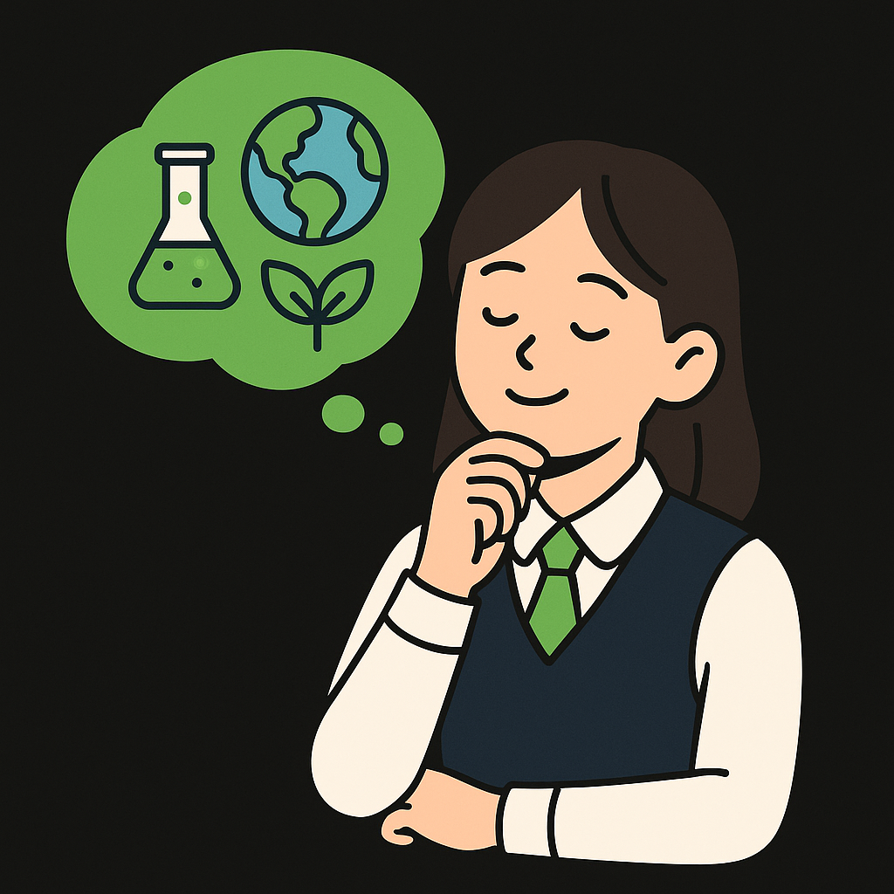

곰팡이 제거, EM 흙공, 환경 캠페인, 스마트 실내 환경 분석까지 생활 속 문제를 과학으로 해결해 본 탐구 여정의 기록
이번 Clean Up Science 프로젝트는 제가 일상에서 익숙하게 접하던 환경 문제를 직접 탐구하고 해결해 볼 수 있었던 의미 있는 경험이었습니다. 교과서에서 배운 과학 지식이 실제 문제 해결 과정에서 어떻게 사용되는지 느낄 수 있었고, 작은 실험 하나에도 수많은 원리와 변수가 숨어 있다는 사실을 깨달았습니다.
곰팡이 제거 실험, EM 흙공 제작, 하천 환경 캠페인, 스마트 실내 환경 분석까지 서로 다른 분야의 활동을 경험하면서 과학이 단일 영역이 아닌 화학, 생명과학, 환경과학, 전자공학이 함께 연결될 때 더 큰 힘을 발휘한다는 사실을 깨달았습니다.
실험 과정에서 EM 흙공 발효가 계획대로 되지 않아 다시 제작해야 하거나 센서 오류가 발생해 값을 다시 측정해야 하는 순간들이 있었습니다. 이러한 시행착오를 겪으며 문제를 해결하는 과정 자체가 큰 배움이 되었습니다.
특히 스마트 실내 환경 분석 활동은 생명과학적 사고와 전자공학적 기술이 서로 매우 자연스럽게 연결될 수 있다는 점을 느끼게 해준 활동이었습니다. 이번 프로젝트를 통해 다양한 분야가 융합될 때 더 큰 힘을 낸다는 것을 체감하였고 앞으로도 이런 융합 탐구를 해보고 싶다는 생각이 들었습니다.
이번 탐구를 통해 스마트 실내 환경 모니터링 시스템에 미세먼지 측정 등 다양한 센서를 추가로 연동해 보고 싶다는 생각이 들었습니다. 또한 실내 환경 데이터를 휴대폰에서 바로 확인할 수 있는 앱을 만들어 보거나, 더 많은 데이터를 수집·분석하여 공기질 악화 가능성을 예측하고 자동으로 환기 시점을 계산해 주는 기능을 확장해 보고 싶다는 생각도 들었습니다. 앞으로도 생활 속 환경 문제를 과학적으로 해결해 나가는 탐구를 계속 이어가고 싶습니다.
작은 실험과 실천이라도 꾸준히 이어간다면 주변 환경을 더 나은 방향으로 바꿀 수 있다는 사실을 깨달았습니다. 앞으로도 과학적 탐구를 통해 생활 속 문제를 발견하고 직접 해결해 나가는 경험을 계속해 보고 싶습니다.